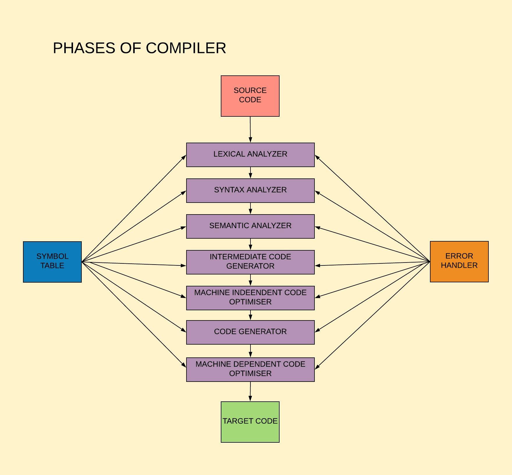

Projects  Tiny Compiler (C; PL/0‑like) Built a compiler with lexer, recursive‑descent parser, symbol table, and stack‑VM codegen. Java Bookstore Management App Console app managing books (author, title, ISBN, price, sale) using OOP and ArrayList.
Skills Compiler Design Parsing (Recursive‑Descent) Symbol Tables Stack‑based VM / Codegen C Programming Data Structures